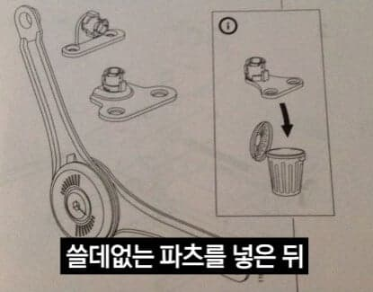
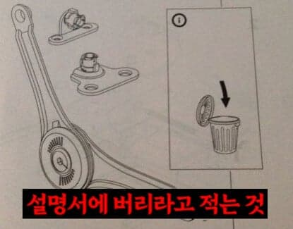
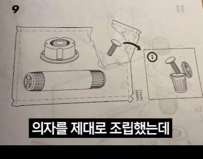
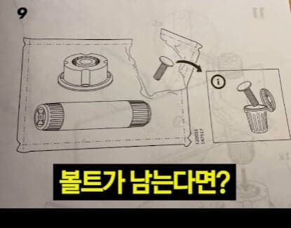
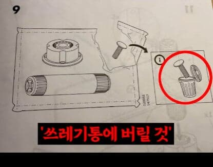
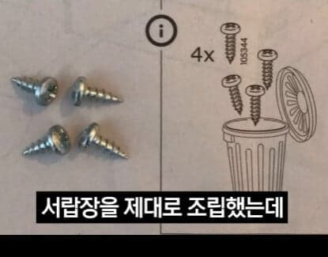
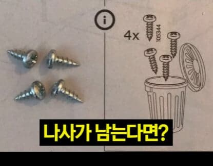
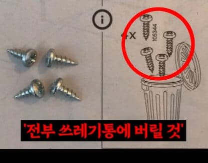
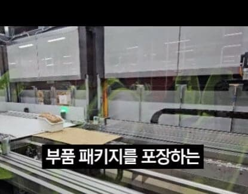
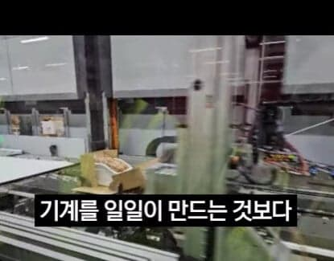
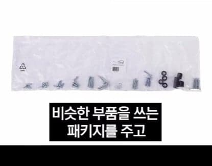
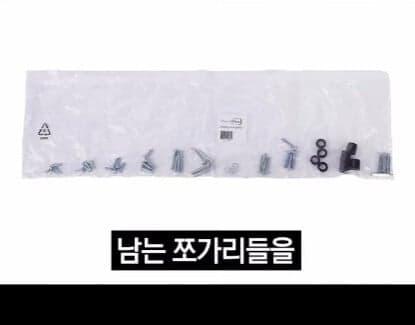
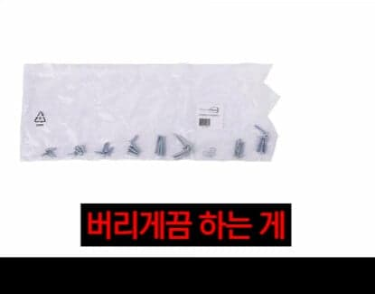
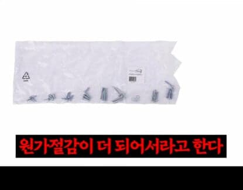
- dc official App














댓글
수집 당시 댓글 104개
· ㅇㅇ · 11.10 07:23:44
· ㅇㅇ · 11.10 08:15:02
· ㅇㅇ · 11.10 08:45:54
· ㅇㅇ · 11.10 08:58:35
· ㅇㅇ · 11.10 12:49:57
ㅇㅇ · 11.08 22:06:32
· 백석행 · 11.08 22:07:13
· ㅇㅇ · 11.08 22:08:23
· 대깨옵붕 · 11.08 22:37:28
· ㅇㅇ · 11.10 02:02:29
· ㅇㅇ · 11.10 02:58:16
· ㅇㅇ · 11.10 04:49:36
· 스마라딘 · 11.10 05:40:20
· ㅇㅇ · 11.10 05:52:03
· Kuppe · 11.10 06:27:54
· ㅇㅇ · 11.10 06:38:20
· ㅇ · 11.10 06:39:44
· ㅇㅇ · 11.10 06:40:57
· MifuneShioriko · 11.10 07:10:13
· asdf · 11.10 12:50:26
· ㅇㅇ · 11.10 12:52:32
ㅇㅇ · 11.08 22:12:32
ㅇㅇ · 11.08 22:15:47
· ㅇㅇ · 11.10 09:59:52
ㅇㅇ · 11.08 22:53:32
땨뗘(봇) · 11.10 01:55:06
암타황제강시현 · 11.10 01:56:49
· 삐수니 · 11.10 01:59:48
· ㅇㅇ · 11.10 02:06:34
· ㅇㅇ · 11.10 03:13:28
마테오리치 · 11.10 01:57:32
· ㅇㅇ · 11.10 02:06:30
ㅇㅇ · 11.10 02:05:08
· 고소 · 11.10 02:54:27
ㅇㅇ · 11.10 02:06:19
· 암타황제강시현 · 11.10 02:07:35
· ㅇㅇ · 11.10 02:07:55
ㅇㅇ · 11.10 02:08:02
· ㅇㅇ · 11.10 02:41:59
· ㅇㅇ · 11.10 02:52:44
· 고소 · 11.10 02:54:55
· ㅇㅇ · 11.10 03:11:25
· ㅇㅇ · 11.10 03:35:36
· 1 · 11.10 03:43:53
· ㅇㅇ · 11.10 05:54:17
· ㅁㅁ · 11.10 06:34:56
· ㅇㅇ · 11.10 07:25:00
· ㅇㅇ · 11.10 07:29:44
· ㅇㅇ · 11.10 17:45:44
퐁퐁아
dQw4w9WgXcQ · 11.10 02:50:14
· 더블알발음은아르르 · 11.10 03:30:07
ㅇㅇ · 11.10 02:51:52
ㅇㅇ · 11.10 03:15:34
ㅇㅇ · 11.10 03:33:01
ㅇㅇ · 11.10 03:35:53
ㅇㅇ · 11.10 04:28:41
ㅇㅇ · 11.10 04:35:34
· ㅇㅇ · 11.10 06:42:38
· ㅇㅇ · 11.10 14:39:26
ㅇㅇ · 11.10 04:50:49
2456778 · 11.10 04:54:58
2456778 · 11.10 04:55:44
ㅇㅇ · 11.10 04:57:10
· ㅇㅇ · 11.10 04:57:50
· ㅇㅇ · 11.10 05:01:37
· ㅇㅇ · 11.10 06:27:41
· ㅇㅇ · 11.10 06:44:48
ㅇㅇ · 11.10 05:01:27
ㅇㅇ · 11.10 05:28:05
ㅇㅇ · 11.10 05:42:33
ㅇㅇ · 11.10 05:48:34
· 순수비난 · 11.10 05:58:05
· ㅇㅇ · 11.10 06:29:24
· ㅇㅇ · 11.10 06:29:34
운빨좆망겜 · 11.10 06:22:43
· ㅇㅇ · 11.10 06:45:25
ㅇㅇ · 11.10 06:33:08
· ㅇㅇ · 11.10 08:22:24
ㅇㅇ · 11.10 07:03:23
ㅇㅇ · 11.10 07:30:10
삭제됨 · 11.10 07:40:31
· ㅇㅇ · 11.10 07:42:21
· ㅇㅇ · 11.10 08:41:02
탄창잃어버림 · 11.10 08:03:43
ㅇㅇㅇ · 11.10 08:25:41
ㅇㅇ · 11.10 08:37:41
ㅇㅇ · 11.10 08:40:18
ㅇㅇ · 11.10 08:46:16
원또 · 11.10 09:25:02
ㅇㅇ · 11.10 09:32:46
ㅇㅇ · 11.10 09:58:29
채피 · 11.10 11:00:54
ㅁㄴㅇ · 11.10 11:20:49
ㅇㅇ · 11.10 11:59:32
ㅇㅇ · 11.10 12:53:50
ㅇㅇ · 11.10 13:47:05
ㅇㅇ · 11.10 13:47:12
ㅇㅇ · 11.10 13:47:17
ㅇㅇ · 11.10 13:47:24
ㅇㅇ · 11.10 15:36:07
프로키온 · 11.08 22:05:36
· ㅇㅇ · 11.10 09:36:51
ㅇㅇ · 11.08 22:05:57
· ㅇㅇ · 11.10 07:23:29